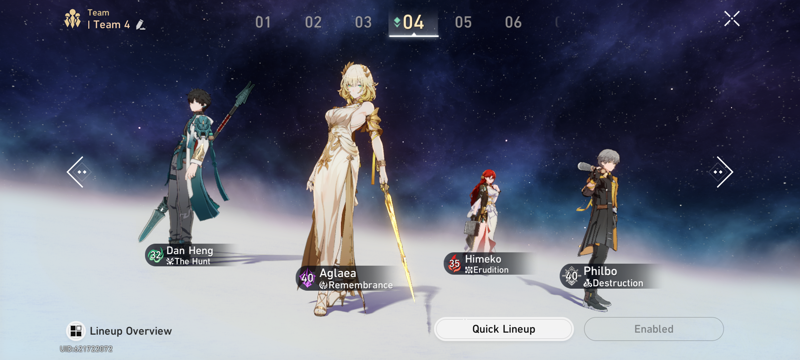

Como funciona o jogo Honkai: Star Rail
Honkai: Star Rail é um RPG que mistura fantasia mitológica com ficção científica num macrocosmo em que é possível viajar pelo espaço a bordo de um trem e conhecer diferentes planetas. A jogatina é baseada em combate por turnos e exploração de mapas, mas existe uma quantidade notável de conteúdo para gerenciar.
Dicas para vencer no Honkai: Star Rail
No Honkai: Star Rail é preciso saber o melhor momento de usar certos ataques para pegar os inimigos desprevenidos na sua vez de jogar. Apesar de ser possível aprender rápido o básico, temos alguns macetes que podem fazer toda a diferença. Confira as dicas e vença mais batalhas no Honkai: Star Rail.

Monte várias equipes
A formação da equipe é essencial no Honkai: Star Rail, já que ter os tipos certos de dano para explorar as fraquezas do inimigo geralmente determina o sucesso em uma batalha. Busque um equilíbrio entre personagens que causam muito dano e personagens que dão apoio e curam os outros. Uma boa estratégia para isso é montar mais de uma equipe. Com diferentes combinações de personagens, você pode ajustar sua equipe antes da batalha contra um inimigo difícil. Assim, você garante que não vai estar em desvantagem.

Comece com uma Técnica
Ao explorar o mundo de Honkai: Star Rail você tem duas opções além do botão de corrida: um para ataques padrão e outro para ataque de Técnica. O número Técnicas é limitado nesse modo, e você pode conferir isso nos círculos de Pontos de Técnica, ao lado do botão. Só é possível usar uma Técnica por vez para cada círculo cheio. Acertar um inimigo permite iniciar o combate, mas você terá uma vantagem extra se fizer isso com uma Técnica, principalmente se o dano dano causado focar em vulnerabilidades específicas. Se puder, sempre comece a batalha com uma Técnica para já chegar com os dois pés no peito.

Personagens defensivos são importantes
Como o esquema de combate do Honkai: Star Rail é baseado em turnos, não dá para desviar de ataques nem bloqueá-los como em outros jogos de ação. Isso significa que, quando seu oponente ataca, não tem muito o que fazer além de aguentar firme. O problema é que o dano aos personagens pode ir se acumulando muito rápido, e você só vai poder usar itens de cura quando sair da batalha. Por isso, uma boa estratégia é ter personagens fortes do Caminho da Abundância e da Preservação nas suas equipes. Use as habilidades deles para proteger e curar seu time e continuar na batalha por mais tempo.

Use os Supremos com sabedoria
Os Supremos dão turnos extras para sua equipe. Eles podem ser usados a qualquer momento depois de carregados, sem consumir um turno. Para começar a carregar de novo, use um Supremo assim que estiver disponível. Mas, de novo: lembre-se de fazer isso na hora certa.
Alguns Supremos são ótimos para preparar um ataque em equipe ou salvar o time de um desastre. Por exemplo, você pode esperar até chegar a vez do seu personagem mais forte para usar um Supremo que quebra a defesa do inimigo e aproveitar ao máximo a vulnerabilidade dele. Analise como esses recursos podem interagir com o resto da sua equipe e garantir ainda mais força pro time.